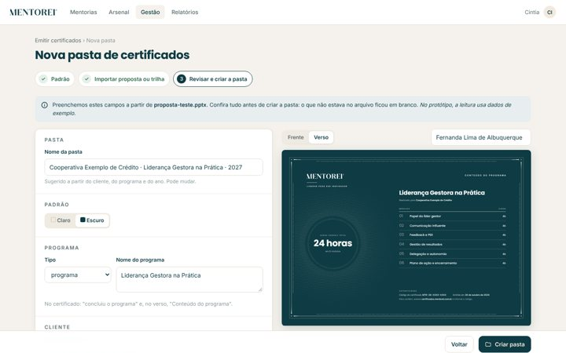
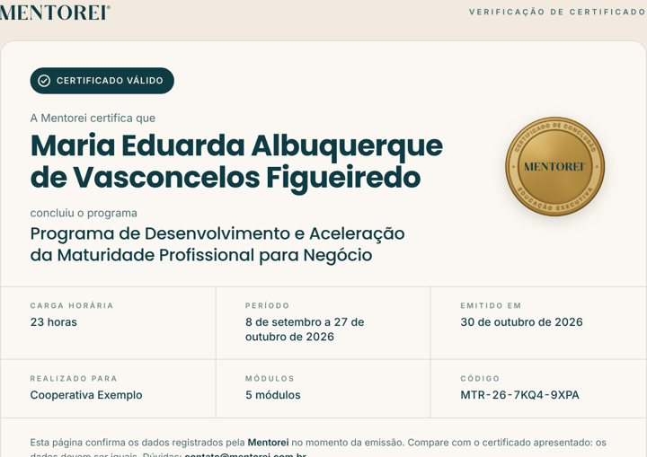
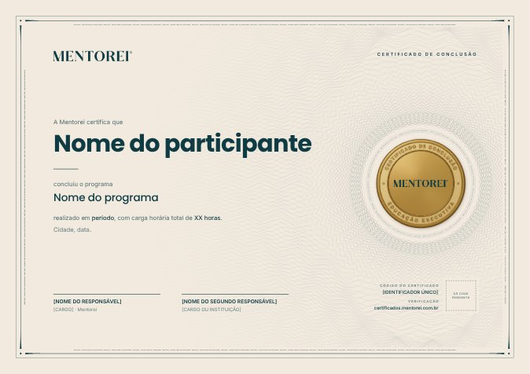
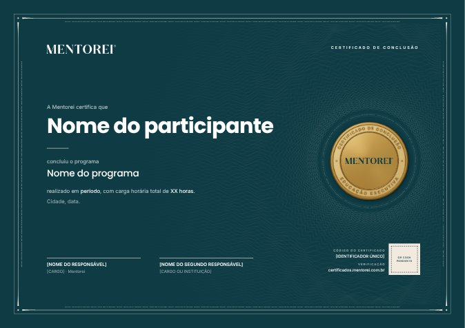

Você só precisa desta página. Os arquivos terminados em .md, .py e .json são para o Claude Code ler,
não para abrir. Se algum link desta página não abrir, é porque você está vendo de dentro do ZIP: clique com o botão direito no ZIP,
escolha Extrair tudo e abra esta página de novo na pasta extraída.
1Veja como vai ficar

Tela da CintiaProtótipo para clicar: criar pasta, enviar assinatura, colar nomes e gerar.
Página do QR codeO que aparece para quem escaneia o certificado.
Certificado de exemplo · claroPDF gerado de verdade, frente e verso, com QR code que funciona.
Certificado de exemplo · escuroCom nome longo e assinatura de exemplo. Especificação completaO que o Claude Code vai construir, em detalhes. Leitura opcional.No protótipo, a leitura da proposta usa dados de exemplo e os PDFs não são gerados de verdade. Isso é o que o Claude Code vai construir.
2Leve para o Claude Code
- Copie a pasta inteira
pacote-certificados-mentoreipara dentro da pasta do projeto da plataforma. É a mesma pasta que você abre quando usa o Claude Code na plataforma. - Abra o Claude Code nessa pasta do projeto.
- Clique no botão "Copiar o texto" logo abaixo.
- No Claude Code, cole com Ctrl + V e aperte Enter.
- Ele vai ler tudo e responder com um plano e algumas perguntas. Leia com calma e responda usando a lista do passo 3 desta página.
- Ele constrói em etapas. No fim de cada etapa, teste o que ele mostrar antes de mandar seguir.
Para testar, use a lista
exemplos/nomes-exemplo.csve a assinaturaexemplos/assinatura-exemplo.jpg.
Quero criar na plataforma da Mentorei o módulo de certificados. Tudo o que você precisa está na pasta "pacote-certificados-mentorei". Primeiro mova essa pasta para "docs/certificados" dentro do projeto (crie a pasta "docs" se não existir) e não publique essa pasta junto com o site. Depois leia inteiro o arquivo "docs/certificados/ESPECIFICACAO.md" e abra os protótipos "telas/emitir-certificados.html" e "telas/verificacao.html" para entender o fluxo. O que é para fazer: 1. No menu Gestão, o item "Emitir certificados", só para quem tem perfil de gestão. 2. Criar a pasta de cada cliente e programa: escolher o padrão claro ou escuro, importar a proposta ou a trilha (a IA lê o arquivo e preenche os campos), editar qualquer informação com a prévia ao vivo e salvar. 3. Assinaturas: enviar a foto da assinatura uma vez (a plataforma tira o fundo e ajusta a cor), guardar numa lista e reaproveitar em qualquer pasta. 4. Dentro da pasta: importar a lista de nomes (Excel, CSV ou colar), gerar todos os certificados em PDF com QR code e baixar um ZIP. Aba de emitidos com ver, baixar, corrigir nome e cancelar. 5. A página pública de verificação em https://certificados.mentorei.com.br/CODIGO Regras importantes: * Não altere o desenho do certificado. Use "docs/certificados/template" como está e só passe os dados pela função CertificadoMentorei.render(dados) (seção 8 da especificação). * Use "docs/certificados/referencia/gerar_lote.py" e "referencia/assinatura.py" como referência do que já foi testado. Pode reescrever na linguagem da plataforma, mas o resultado precisa ser igual aos PDFs de "docs/certificados/exemplos". * Códigos aleatórios com gerador criptográfico, nunca sequenciais. Nada de CPF. * Textos da interface em português do Brasil, sem travessão e sem hífen como pontuação. Antes de escrever código: * Explore o projeto e me diga, em português simples, como a plataforma é feita (linguagem, banco de dados, onde fica o menu Gestão, onde está hospedada) e como você pretende encaixar o módulo. Liste os arquivos que vai criar ou mudar. * Me diga como vai rodar o Chromium para gerar os PDFs na hospedagem atual e se precisa de algum serviço novo. * Me pergunte o que eu preciso decidir (endereço do QR code, quem assina, quem pode emitir, chave da API do Claude para ler as propostas, por quanto tempo guardar os ZIPs). * Proponha fazer em etapas, com uma entrega que eu consiga testar ao fim de cada uma: (1) banco de dados, pastas e prévia; (2) assinaturas; (3) importar nomes, gerar PDFs e ZIP; (4) verificação pública; (5) leitura da proposta pela IA. Ao terminar cada etapa, rode os testes dos "Critérios de aceite" (seção 13 da especificação) que se aplicam e me mostre o resultado. Explique tudo como para quem não é programador.
O mesmo texto está no arquivo PROMPT-PARA-O-CLAUDE-CODE.txt, que abre no Bloco de Notas.
3Decisões para ter em mãos
- Endereço do QR code. Recomendado:
certificados.mentorei.com.br. Ele fica impresso para sempre nos certificados: decida antes do primeiro certificado de verdade. - Quem assina pela Mentorei: nome e cargo de cada pessoa e uma foto da assinatura (caneta escura, papel branco sem linhas; foto de celular serve). A plataforma tira o fundo sozinha.
- Assinatura do cliente: quando o cliente também assina, peça a foto da assinatura, o cargo da pessoa e a autorização dela para usar nos certificados.
- Quem pode emitir: só a Cintia e as sócias, ou mais alguém?
- Leitura automática da proposta: usa a IA do Claude pela internet. Precisa de uma chave da API, cobrada por uso. O Claude Code explica onde criar e onde colocar.
- Por quanto tempo guardar o ZIP de cada turma. Sugestão: 30 dias (depois dá para gerar de novo).
4Quando ele pedir para criar o endereço na Hostinger
O Claude Code vai dizer o valor para colocar. Com ele em mãos:
- Entre em hpanel.hostinger.com com o login da Mentorei.
- Clique em Domínios e depois em mentorei.com.br.
- No menu da esquerda, clique em DNS / Nameservers.
- Em Gerenciar registros DNS, preencha:
Tipo o que o Claude Code disser (normalmente CNAME) Nome certificadosAponta para o valor que o Claude Code passou TTL deixe como está - Clique em Adicionar registro.
- Espere de alguns minutos a algumas horas e avise o Claude Code para ele testar.
É o mesmo caminho que vocês já usaram para criar cooperativas.mentorei.com.br.
5Bom saber
- A marca d'água e o selo deixam o certificado bonito e difícil de copiar à mão. Quem garante que ele é verdadeiro é a verificação pelo QR code.
- A assinatura em imagem é o visual de assinado. Não é assinatura digital com validade jurídica.
- Cada certificado em PDF tem cerca de 1,2 MB. Uma turma de 30 pessoas dá um ZIP de uns 40 MB.
- A página de verificação mostra o nome da pessoa e os dados do curso, e nada mais. Sem CPF.
- Quer abrir um arquivo .md mesmo assim? Clique com o botão direito nele, escolha Abrir com e depois Bloco de Notas.